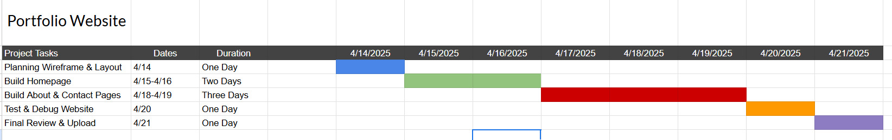

I wanted to create a Gantt chart of the creation of a portfolio website. This project will showcase my personal and professional work as an artist and web designer.This includes homepage design, about me page, gallery, contact form, and responsiveness for mobile. The Gantt chart below outlines planning steps to complete the project in a week.
This session helped me understand how to plan and manage a web project efficiently. Creating the Gantt chart gave me a clearer vision of time management and how each task connects. Since I created this on google sheets, I learned more about the program than I've ever thought it could do. Now, I feel more prepared to use project management tools in school or the workplace. Understanding timelines and deliverables will help me meet deadlines and stay organized in real-world projects.